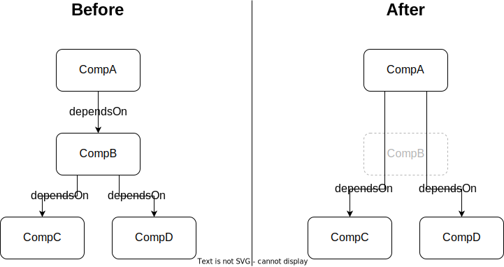

build-public
This command creates a redacted version of an SBOM fit for publication. It:
deletes any property (i.e., item in the
propertiesarray of a component) whose name starts withinternal:from all components,deletes any
externalReferencesthat are marked as internal by the regex pattern specified by the user, if provided,can optionally delete entire components matching a JSON schema provided by the user.
For the deletion of entire components internal properties and external references will be taken into account when matching the JSON schema. If a component containing nested components is deleted, those nested components are deleted as well.
Warning
The metadata.component will not be removed even when the JSON schema applies to it.
This is because the metadata.component is the component the BOM describes, therefore removing it, would make the SBOM ambiguous.
If the schema applies to the metadata.component, the SBOM is likely not intended for public use.
However, this behavior does not affect the deletion of any property, which starts with the name internal:.
The JSON schema must be formulated according to the Draft 7 specification.
usage: cdx-ev build-public [-h] [--schema-path <schema path>]
[--ext-ref-regex <ext-ref-regex>] [--output <file>]
<input>
Positional Arguments
- <input>
Path to the SBOM file.
Named Arguments
- --schema-path
Path to a json schema, defining when the information in an SBOM is considered internal
- --ext-ref-regex
Regex pattern to remove matching external references.
- --output, -o
The path to where the output should be written. If this is a file, output is written there. If it’s a directory, output is written to a file with an auto-generated name inside that directory. If it’s not specified, output is written to stdout.
Dependency-resolution
Any components deleted by this command are equally removed from the dependency graph. Their dependencies are assigned as new dependencies to their dependents.
Examples
Here are some JSON schemata for common scenarios to get you started.
When passed to the command, this schema will remove any component whose group is com.acme.internal:
{
"properties": {
"group": {
"const": "com.acme.internal"
}
},
"required": ["group"]
}
An extension of the above, the next schema will delete any component with that group, unless it contains a property with the name internal:public and the value true. Note that the property itself will still be removed from the component, because its name starts with internal:.
{
"properties": {
"group": {
"const": "com.acme.internal"
}
},
"required": ["group"],
"not": {
"properties": {
"properties": {
"contains": {
"properties": {
"name": {
"const": "internal:public"
},
"value": {
"const": "true"
}
},
"required": ["name", "value"]
}
}
},
"required": ["properties"]
}
}
This schema will delete the three components with the names AcmeSecret, AcmeNotPublic and AcmeSensitive:
{
"properties": {
"name": {
"enum": ["AcmeSecret", "AcmeNotPublic", "AcmeSensitive"]
}
},
"required": ["name"]
}
The following schema is a little more involved. It will delete any component whose license text contains the string This must not be made public:
{
"properties": {
"licenses": {
"contains": {
"properties": {
"license": {
"properties": {
"text": {
"properties": {
"content": {
"pattern": "This must not be made public"
}
}
}
},
"required": ["text"]
}
},
"required": ["license"]
}
}
},
"required": ["licenses"]
}